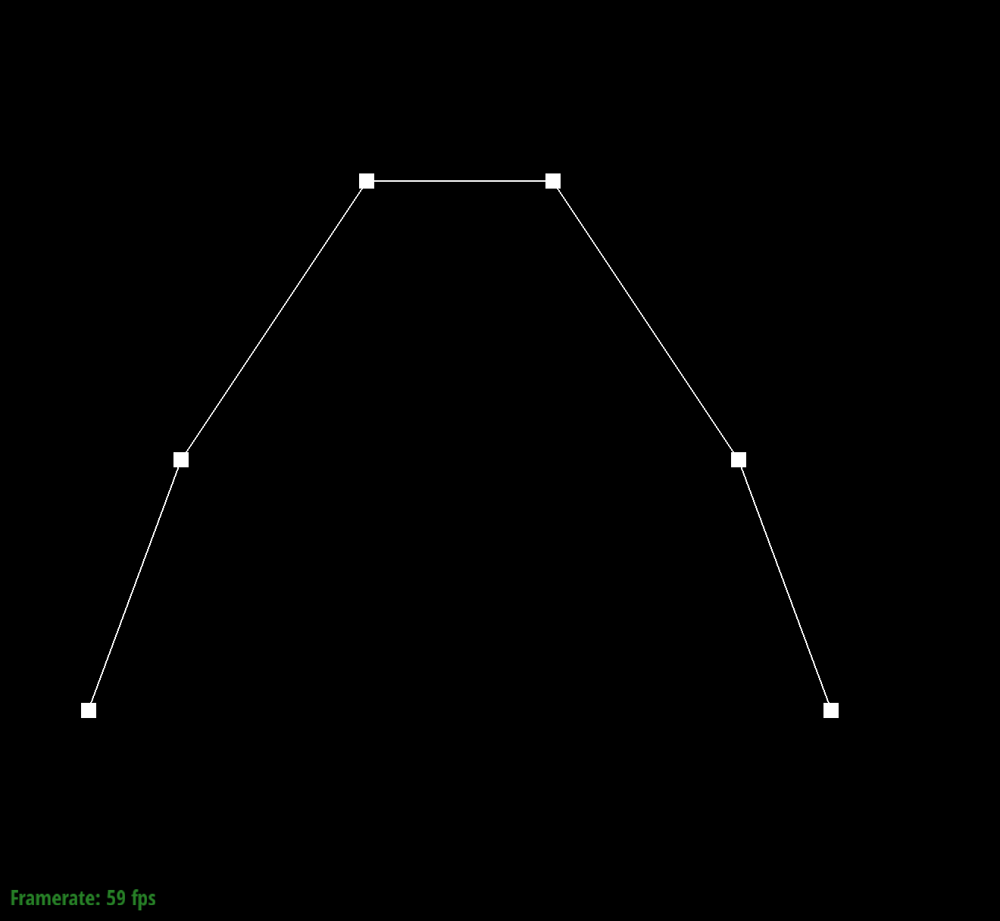
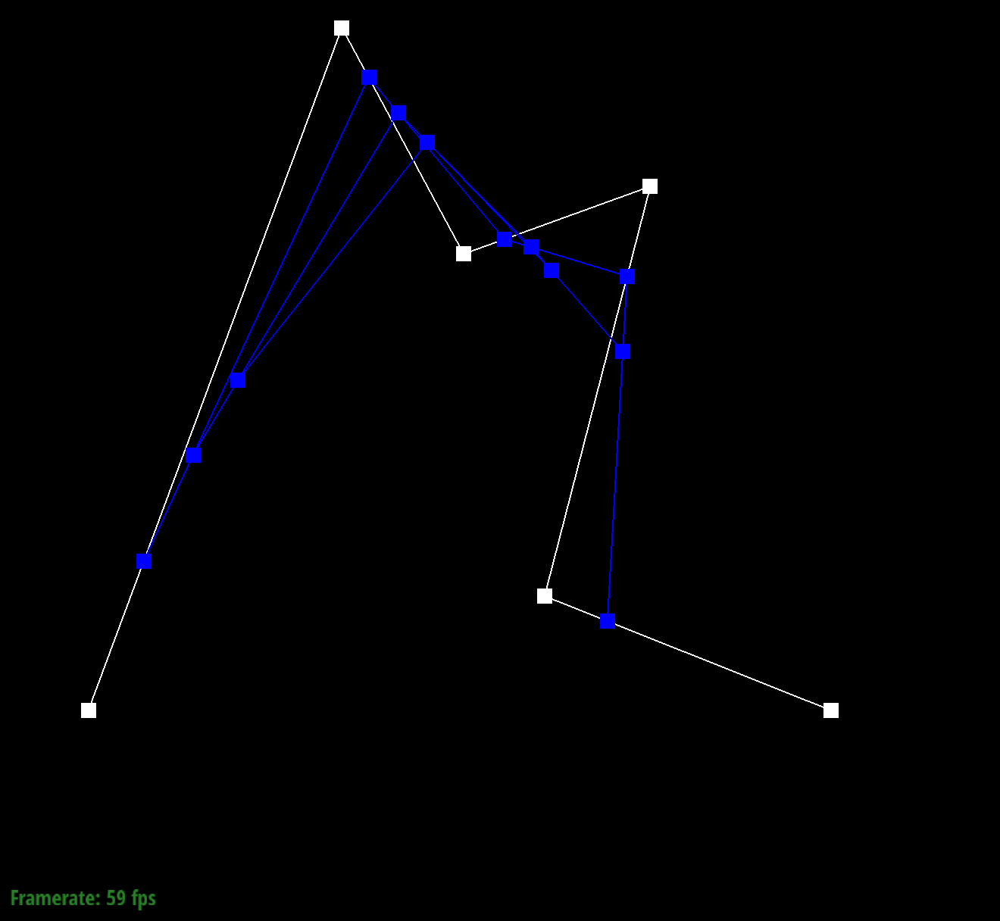

Overview
In this project, I began by implementing a simple Bezier curve using linear interpolation from de Casteljau's
algorithm to repeatedly generate intermediate points to find one along the curve. Following this simple 1D case, I
extended the implementation to support 2D Bezier surfaces by using a similar strategy repeatedly along both dimensions.
For the next mesh section of the project, I worked with a lot of different mesh techniques to create smoother meshes,
flippped and split edges, and finally subdivision of meshes to create smoother, more fine-grained structures.
I think one of the most interesting things was the final section of loop subdivision where I was able to see how modifying
the mesh in different ways allowed the subdivision to perform differently due to the structure of the splits.
Section I: Bezier Curves and Surfaces
Part 1: Bezier curves with 1D de Casteljau subdivision
De Casteljau's Algorithm Explanation: De Casteljau's algorithm is a method that creates bezier curves
from a list of control points by iteratively reducing the number of intermediate control points via linear interpolation.
At each timestep, the algorithm will take all adjacent points (points[i] and points[i+1] from i=0 until i+1 = n-1) and
calculate an intermediate point between each pair according to the parameter t which determines the degree of interpolation.
Continually iterating in this fashion from n points until we are left with only 1 point, this last point is
guaranteed to be on the Bezier curve and we can create a smooth polynomial for this point and the two edge
control points (p[0] and p[n-1]). For my implementation, I simply looped over all the points provided
and solved for a new point that was the linear interpolation of each consecutive pair and added it to my
intermediate control points list, which I returned in the function.
My Bezier file: 0.100 0.230 0.200 0.500 0.400 0.800 0.600 0.800 0.800 0.500 0.900 0.230
My Bezier Evaluation steps:
|

Original Bezier Points
|
Intermediate layer 1
|
 Intermediate layer 2
Intermediate layer 2
|
|
Intermediate layer 3
|
Intermediate layer 4
|
Final Bezier point
|
Bezier Evaluation steps on modified control points and t:
|
Original Bezier Points
|
Intermediate layer 1
|
Intermediate layer 2
|
|

Intermediate layer 3
|
Intermediate layer 4
|
Final Bezier point
|
Part 2: Bezier surfaces with separable 1D de Casteljau subdivision
De Casteljau's Algorithm Extended to Surfaces: Expanding off of my implementation from part 1,
I applied De Casteljau's Algorithm to create 2D surfaces by repeatedly doing 1D de Casteljau's along
a specific dimension. I started by going through all the rows of the controlPoints matrix and
calculating the final control point along each of these rows (by running 1d De Casteljau on each row)
using the interpolation factor u. After getting all of the final points for each row, I used one final
call of 1d de Casteljau's on these final row points with interpolation factor v to incorporate the column
dimension of the surface. The final point calculated from the de Castelajau interpolation on the final
intermediate row points gives a point on the 1D Bezier surface.
Teapot Screenshot:
Section II: Sampling
Part 3: Average normals for half-edge meshes
Area-weighted Vertex Normals Explanation: To calculate the area weighted normal, I began
by iterating over all of the vertices neighboring the current vertex. I started with the default half-edge
vertex which is accessed via (this->halfedge->twin->vertex) as my initial current vertex. At each iteration
over all neighboring outgoing edges/vertices, I also accessed the next immediate vertex using the h_twin->next->twin->vertex.
This allowed me to access the current neighboring vertex along with the next one, providing three vertices (including
the given current vertex) to define the face and calculate the normal vector. To find the normal vector, I took the
cross product of the vertex positions using cross(vertex2 - this, vertex1 - this) using the position attribute of
each vertex. I made sure to reverse the ordering of the vertices (using vertex 2 as the first parameter and vertex 1
as the second) in order to make sure the normal vector pointed outward. This returned for me a vertex that is perpendicular with a magnitude equal to the area of the surface.
Iterating through all neighboring vertices as vertex1, I was able to go through all of the neighboring faces
and store a separate vector that kept track of the sum of all normal vectors calculated for each face. Since each
normal vector already had the magnitude of the cross product, I didn't need to do any extra weighting adjustments and
simply returned the total normal vector normalized into its unit form.
Teapot Screenshots:
 Flat shading
Flat shading
|
Phong shading
|
Part 4: Half-edge flip
Edge Flip Implementation: I implemented this very methodically and actually got it working on the first try!
(Spoiler alert: did not get it on the first try actually. Keeping my original writeup as follows but you'll see in the last
part that I actually messed up very slightly and this tiny oversight took ages to debug.)
I began by carefully defining the half edge I would flip along with the four corners of the flipping region which
I was interested in. I labeled these edges according to the diagram provided so b was the source of the
half edge, c was the source of the twin, and a and d were opposite the halfedge and twin respectively.
After defining these, I proceeded to carefully update the two source vertices of the halfedge by
updating the next pointers for edges that entered both b and c to be the next edge once the halfedge was flipped.
I then made sure to set the halfedge of each source vertex to one one of the known outgoing edges in case there
was a situation where the halfedge currently assigned to that vertex was the one being flipped. After handling the
edges for the source vertices of both h and h_twin, I proceeded to update the halfedge itself by setting the
neighbors of h and h_twin. In this process, I updated the next edges and source vertices to reflect the fact that
h's next edge should be the edge from a to b and it should originate from source vertex d (and similarly for h_next).
After that, I proceeded to updating the halfedges for the new source vertices of h and h_next (d and a) by
modifying the edges that entered and exited each vertex to point to h or h_next as appropriate. Finally, I updated
both face's halfedges to make them point to the modified halfedge in case the current halfedge they pointed to
was no longer part of the face.
Teapot Screenshots:
|
Before edge flips
|
Some edge flips
|
More edge flips
|
Debugging Journey: As mentioned before, I didn't really have a debugging journey since my code worked on
the first try. (Lol, how naive of me... again keeping the original response since I detailed my debugging journey
in part 6.) I did have some minor syntax errors but the first time I built it, it worked! I didn't quite believe it at first so I did do some verifying on the rendered image by
doing a lot of flips of different edges, back and forth the same edge, etc. I also checked the halfedge pointers of
each neighboring element of a flipped edge to ensure that they were all updated correctly and pointed to the appropriate
halfedge. Everything looked good so I'm really happy with how detailed and careful I was in making sure that I methodically
updated every vertex, halfedge, and face correctly to avoid any painful debugging experiences.
Part 5: Half-edge split
Edge Split Implementation: I implemented the edge splits pretty similarly to how I did the edge flips. Once
again, I was very careful with my variables and I began by just creating a variable for every single edge, vertex,
halfedge, and face. After making all of these variables, I started by updating all the newly created halfedges
with setNeighbors which forced me to very clearly iterate over all of the proper vertices, edges, and halfedges.
After that, I did the next attributes and face updates for the outer edges which were relatively simple after I had defined all
the inner halfedges. The very last thing was making sure to update the faces so that each face corresponded to a
correct halfedge and also updating the C vertex's halfedge since that's the only one that had an edge removed from
it (the old central edge).
Edge Split Before/After Screenshots:
|
Before (default)
|
After edge split
|
Edge Split and flip Before/After Screenshots:
|
Before edge split
|
 After edge split and flip
After edge split and flip
|
Debugging Journey: The only debugging issue I had was that I noticed on my first try that after splitting
once, I would get 4 good looking split edges but when I highlighted over them, the edge that was part of the original edge being split had
a half-overlap in the edge (ie. one half of the split edge was correct but the other half spanned the entire edge
rather than its assigned half). This was pretty easy to debug because I knew the error must have been in just one of
the updated edges and I found out that it was because I forgot to update the source of the original halfedge that I
had moved from B-D to V-D for the new vertex.
Part 6: Loop subdivision for mesh upsampling
Loop subdivision implementation: I implemented loop subdivision by mostly following the outline provided in the
code.
1. I started by iterating through all of the vertices in the mesh and for each vertex, I traversed over all of the
neighboring vertices using a method similar to that provided in the printNeighbourPositions method from the primer
but instead of printing out the vertex, I added it to a Vector3D that stored the running sum of all neighbor positions.
I also kept track throughout this loop of the number of neighbors by incrementing a counter.
After that, I used the formula provided in the spec to calculate the updated new positions of each
vertex and assigned it to the vertex's newPosition attribute. Finally, I also made sure to set the isNew attribute for
every vertex to false.
2. For computing the new vertex positions along each edge, I iterated over all the edges of the
mesh and for each edge, I accessed the four relevant vertex neighbors and calculated the new position according
to the new vertex formula provided in the spec. In order to keep track of which edges were new and which were part
of the original edge (but split), I made sure to update the isNew attribute of the edge I was iterating over as false and
added an additional isOrig attribute which I set to true. (The latter attribute was mainly useful for parts 3 and 4 since
part 3 requires all newly created edges to be identified as isNew while part 4 requires distinguishing between edges that
were part of the original edge or not, and there is one edge segment which is both new and part of the original, so making
two attributes allowed differentiating between the three possible cases.)
3. For this step, I wanted to reuse my code from splitEdge but needed to modify it slightly to accommodate the attribute
assignments (for isNew and isOrig) along with the variable vertex location. I ended up modifying my previous splitEdge implementation
by creating a helper function called splitEdgePosHelper which did all of the work and took in an extra position input
parameter which was used to set the position of the new vertex. The previous splitEdge method simply calculated the
midpoint position and passed that in to the helper function while in this part, I passed in the edge's newLocation attribute from the previous step.
I also added a couple lines to assign the newly created edges to isNew = True and isOrig = false for all edges except
the one that was split but part of the original edge (which had isOrig=True) since it was part of the original edge.
4. In this step, I iterated over all edges again and simply checked that for every non-original edge, if there was one
vertex that was old and another that was new, I fipped that edge.
5. In this final step, I iterated over all of the vertices and updated the position of the vertex to be the newPosition
if the vertex was not new. This is because for new vertices, they were already assigned to be their new position since
no other vertex's position is reliant on a new vertex's old location.
Debugging tricks: I ran into a couple issues while implementing this part. First, I noticed that a lot of my vertices were
being rendered at position (0, 0, 0). I noticed this because a lot of my vertex positions seemed to be incorrect so I
added a print statement in the for loop of step 5 that printed out whether a vertex was new and its position. I noticed that
for all the new vertices, they were being assigned the position (0, 0, 0). Checking my code again, I discovered that the issue
was that I was updating the new vertices' positions to be the new position but when I created the new vertices, I had already
assigned them to the correct updated position and never updated the newPosition attribute which was causing the updates to
re-assign them incorrectly to (0, 0, 0). The other major issue I had was that as I rendered more and more loop division levels,
arbitrary triangle panels in the mesh were completely transparent and not being rendered. I used the navigation tools in the
GUI to traverse the edges and halfedges and noticed that everything looked correct but the only thing I couldn't access was the
face; which led me to believe there was an issue in one of my face updates. I even printed out the address of all the faces
being rendered in drawFaces and the missing faces were in face being rendered. I eventually discovered (with help from anon
mouse on piazza!) that rather than my face objects being incorrect, it was actually some of my halfedge's face attributes
not being updated properly in the flip method. After flipping an edge, two of the edges needed to be reassigned to a new face
but I had forgotten to do that step, which was causing the misrendered edges.
Mesh behavior on sharp corners/edges: It appears that as loop subdivision occurs, it greatly smooths out any corners
and edges in the object. This is likely due to the fact that the new vertices created are a weighted average of the old ones and
its neighbors so edges that are sharp become smoothed out by this averaging. We can see this effect most noticeably in the
cube where it begins with very sharp corners and edges but ends up being a round shape after a couple iterations of subdivision.
In the following images, I played around with pre-processing one face of the cube with extra splits and analyzing the results below.
 Original
Original
|
Pre-made flips on one side of cube
|
|
Loop subdivision 1
|
Side view of loop subdivision 1
|
|
Side view of loop subdivision 2
|
Back view of loop subdivision 2
|
In particular, it is worth noting the fact that the face where I pre-performed splits
had a much flatter surface with noticeable edges around it whereas all the other faces
ended up being rounded. This shows that having more pre-made splits ensures that the subdivision
adheres more closely to the original shape (flat surface with edge) whereas fewer splits in the
beginning causes loop subdivision to make things significantly more rounded (as shown in the other cube faces).
Nevertheless, subdivision is inherently a
procedure that makes rounded figures so regardless of the initial splits, performing more subdivision
steps still causes a rounded shape.
Cube Default Asymmetric subdivisions: The edges of the cube are symmetrical by default but I noticed that
the faces all had one diagonal split which was causing the cube's slightly oblong shape in one axis. This is because
having a pre-made split reduces the roundness in that split region (as mentioned in my observations of the previous
part). As such, having this initial diagonal across the cube on each face caused the oblong structure to occur along
each face's diagonal.
|
Original
|
Loop subdivision 1
|
Loop subdivision 2
|
|
Loop subdivision 3
|
Loop subdivision 4
|
Loop subdivision 5
|
|
Loop subdivision 6
|
Loop subdivision 7
|
Loop subdivision 8
|
Cube Preprocessed Symmetric subdivisions: I made the subdivisions symmetrical by ensuring that the
original splits on the cube were symmetrical. By making
all faces of the cube have a cross split that is symmetrical, this ensured that all further loop divisions were symmetrical because the
initial split was symmetrical and loop division itself is a symmetrical process.
|
Original
|
Initial edge flips (on all faces)
|
|
Loop subdivision 1
|
Loop subdivision 2
|
|
Loop subdivision 3
|
Loop subdivision 4
|
|
Loop subdivision 5
|
Loop subdivision 6
|
|
Side view of loop subdivision 4
|
Side view of loop subdivision 5
|